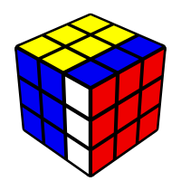
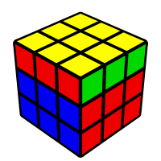
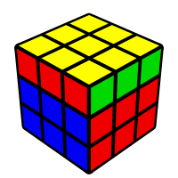
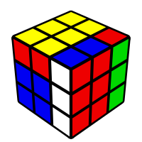

rubik's cube, group theory, haskell
Rubik’s Cube Algebra
Permutations and symmetry are central themes of group theory, so it is perhaps not surprising that the Rubik’s Cube has a nice algebraic description. The first such description was given by David Singmaster in his 1979 book Notes on Rubik’s Magic Cube. David Joyner used the algebra in Singmaster’s book to write an entire introductory book on group theory, called Adventures in Group Theory. The book is fantastic!
Implementing the Rubik’s Cube Group in Haskell is quite simple, especially given all the algebra readily available in the language. What is more, it is really fun to play with the implementation and translate known Rubik’s Cube algorithms into group elements. Concepts like conjugation and commutators, which are important in the study of non commutative groups, are helpful tools for solving the Rubik’s Cube.
I am going to describe the Rubik’s Cube group and how I implemented it in Haskell (available here). For more details, to dive deeper, or to read about other similar puzzles, check out Adventures in Group Theory.
Here is an outline:
- The illegal Rubik’s Cube group
- Corner and edge orientations and permutations
- Semidirect products
- Haskell implementation of the illegal cube group
- The (legal) Rubik’s Cube group
- Haskell implementation of the legal cube group
I highly recommend grabbing a cube to use while you read!
The Illegal Rubik’s Cube Group
If you take the Rubik’s Cube apart (without peeling off any stickers)

and put it back together anyway that the pieces will fit, you get a permutation of the fifty-four stickers which may or may not be a solvable Rubik’s Cube anymore. The collection of all such permutations is what Joyner calls the illegal Rubik’s Cube group. Investigating this group provides insight into the actual Rubik’s Cube group. Later I will give a description of the legal Rubik’s Cube group as a subgroup of the illegal one.
Permutations and Orientations
Notice that the Rubik’s Cube is made out of eight corner pieces and twelve edge pieces. The key observation for the cube algebra is what Joyner calls the first fundamental theorem of cube theory (theorem 9.6.1):
A position of the Rubik’s Cube is completely determined by:
- how the corners are permuted
- how the corners are oriented
- how the edges are permuted
- how the edges are oriented
For example, consider the standard Singmaster move R:

In the spirit of Stefan Pochmann’s blindsolving mnemonics, let us give some corners memorable names:
- red-yellow-green - Robin
- white-blue-red - Papa Smurf
- white-red-green - the Grinch
- blue-yellow-red - Superman
I am using the standard “minus yellow” coloring scheme here, where green is opposite blue and white is opposite yellow. The corners are permuted by R according to the following cycle
Superman ⮕ Robin ⮕ the Grinch ⮕ Papa Smurf ⮕ Superman
Just saying that Papa Smurf moves to Superman’s position is only half of the story. He lands in this position with the white sticker on the “blue face”. In some sequences of moves, he could land with the white sticker facing the “blue face”, the “yellow face”, or the “red face”. The point of the orientations is to specified these positions. Each corner will have three possible orientations and each edge will have two possible orientations.
The orientations are given relative to an arbitrary, but fixed, standard reference. For the corners, mark each white and yellow sticker with a plus sign. The standard reference for the corners is the position of the plus sign on the solved cube. Given an element of the illegal cube group, the orientation of a corner is the number of clockwise rotations needed to move the plus sign to match the standard reference. For example, consider again Papa Smurf after the move R. One clockwise turn is required to point the white sticker to the “yellow face”, Therefore this corner has orientation 1 in move R. And Superman needs two clockwise turns to point the yellow sticker to the “yellow face” after move R, so it has orientation 2. Similarly, the Grinch has orientation 2 after R and Robin has orientation 1.
The orientations for the edges are defined in the same way, relative to some standard reference.
Let \( \mathbb{Z}_m \) be the integers modulo \(m\), \( \mathbb{Z}_m^{n} \) the group of vectors over \( \mathbb{Z}_m \) of length \(n\), and \( \mathsf{S}_n \) be the group of permutations of \(n\)-element sets.
Then the elements of the illegal Rubiks’s Cube group are described by \[ (\mathbb{Z}_3^{8}\times\mathsf{S}_{8}) \times (\mathbb{Z}_2^{12}\times\mathsf{S}_{12}), \]
where \( \mathbb{Z}_3^8 \) gives the eight corner orientations, \( \mathsf{S}_8 \) gives the corner permutation, \( \mathbb{Z}_2^{12} \) gives the twelve edge orientations, and \( \mathsf{S}_{12} \) gives the edge permutation.
Semidirect Products
Since \( \mathbb{Z}_n^m \) and \( \mathsf{S}_n \) are both groups, a group operation can be defined coordinate-wise on \( (\mathbb{Z}_3^{8}\times\mathsf{S}_{8}) \times (\mathbb{Z}_2^{12}\times\mathsf{S}_{12}) \), but this operation does not match the Rubik’s Cube. Consider the moves U, R, and UR:
 U⮕ 
U⮕ 
R⮕
U⮕ R⮕ 
Focusing only on the corners, consider the group operation on \( \mathbb{Z}_3^{8}\times\mathsf{S}_{8} \). Write U in terms of its corner orientations and permutation as \( (U_o, U_p) \). Similarly, write R as \( (R_o, R_p) \). What pair of orientations and permutation does \( UR=(U_o, U_p) \bullet (R_o, R_p) \) result in?
The Coordinate-wise operation in the second coordinate matches the Rubik’s Cube. Notice that UR permutes the corners according to \( R_p\circ U_p\).
This situation is different, however, for the orientations. Notice that U does not change the orientation of any of the corners, and that from the solved state R adds 1 to Robin’s orientation. But, from the solved state UR adds 2 to Robin’s orientation.
If you are holding the cube and watching UR in action, it is clear what is happening: \( U_p \) moves the Robin to Superman’s spot, and then \( R_o \) adds 2 to the orientation of the corner now occupying Superman’s spot, namely Robin. In other words, from the solved state, R adds 2 to Superman’s orientation, but if some other corner is occupying that position, then R adds 2 to that cube instead.
The corner orientations of UR are therefore: \[ U_o \bullet R_0 = U_o + R_o’ \] where \( + \) is the usual operation on \(\mathbb{Z}_3^8 \), and \( R_o’ \) is the result of permuting the indices of \( R_o \) according to \( U_p \).
In general, let \( \phi_p(v) \) denote the vector obtained by permuting the indices of \(v\) according to \(p\). The operation on \( \mathbb{Z}_3^{8}\times\mathsf{S}_{8} \) is defined by
\[ (v, p) \bullet (w, q) = (v+\phi_{p}(w),~q\circ p) \]
This group is written as \[ \mathbb{Z}_3^{8}\rtimes_\phi\mathsf{S}_{8} \] or sometimes just \( \mathbb{Z}_3^{8}\rtimes\mathsf{S}_{8} \), and is called the (external) semidirect product of \( \mathbb{Z}_3^{8} \) and \( \mathsf{S}_{8} \) with respect to \( \phi \).
The corners of the illegal Rubik’s Cube group are given by \( \mathbb{Z}_3^{8}\rtimes\mathsf{S}_{8} \) and similarly the edges are given by \( \mathbb{Z}_2^{12}\rtimes\mathsf{S}_{12} \). Moreover, the illegal Rubik’s Cube group is given by \[ (\mathbb{Z}_3^{8}\rtimes\mathsf{S}_{8}) \times (\mathbb{Z}_2^{12}\rtimes\mathsf{S}_{12}) \]
This is proposition 11.1.1 of Joyner.
Semidirect Products in General
The semidirect products is more general than the construction in the last section.
Let \(\mathsf{Aut}(G)\) denote the group of automorphisms of a group \(G\) (i.e. the isomorphisms of \(G\) with itself under composition).
Let \(\phi:H\to\mathsf{Aut}(G)\) be a group homomorphism. Then \[ G\rtimes_\phi H\] is the group whose elements are \( G\times H\) and whose operation is given by \[ (a, x) \bullet (b, y) = (a\bullet\phi_x(b),~x\bullet y) \]
The illegal Rubik’s Cube group was described using \( \mathbb{Z}_m^{n}\rtimes_\phi\mathsf{S}_{n} \), where \( \phi_p(v) \) is the vector obtained by permuting the indices of \(v\) according to \(p\). It is easy to check that this \(\phi\) is a homomorphism from \( \mathsf{S}_{n} \) to \( \mathsf{Aut}(\mathbb{Z}_m^{n}) \).
Sometimes semidirect products are described as direct products with a “twist”. The twist is the replacement of \(b\) by \(\phi_x(b)\).
Wreath Products
This subsection can be skipped. The semidirect product used in the illegal Rubik’s Cube group is actually an example of a specific kind of semidirect product called a wreath product.
A (left) group action is a function \[\phi: H\to (X\to X)\] from a group \(H\) to functions on a set \(X\), such that the identity in \(H\) is mapped to the identity function on \(X\), and which respect the group operation: \[\phi_{gh}=\phi_g\circ\phi_h\]
If \(\phi\) is a group action on \(X\), and \(G\) is a group, then there is a homomorphism \[ \Phi : H\to\mathsf{Aut}\left(\prod_XG\right) \] where \(\prod_XG\) is the direct product of \(G\) with itself using \(X\) as a index set. The definition of \( \Phi_h(v) \) is exactly like the construction used in the Rubik’s Cube, it is the vector obtained by permuting the indices of \(v\) according to \(\phi_h\).
Therefore an action \(\phi\) of \(H\) on \(X\) can be used to form a semidirect product \[\prod_XG \rtimes_\Phi H\]
This construction is called a wreath product and can be written as: \[G \wr_X H\] or just \(G \wr H\).
Bringing it back to the illegal Rubik’s Cube, notice that there is a group action of \(\mathsf{S}_n\) on \(\{1, 2, , n\}\) given by applying the permutations to the set of \(n\) numbers. Therefore the illegal Rubik’s Cube group is described by a wreath product: \[ (\mathbb{Z}_3\wr\mathsf{S}_{8}) \times (\mathbb{Z}_2\wr\mathsf{S}_{12}) \]
Haskell implementation
The implementation mostly entailed gluing together existing libraries and providing an explicit translation of the Singmaster moves to \( (\mathbb{Z}_3^{8}\rtimes\mathsf{S}_{8}) \times (\mathbb{Z}_2^{12}\rtimes\mathsf{S}_{12}) \).
Representing \(\mathbb{Z}_m\)
For \(\mathbb{Z}_m\), I used the modular arithmetic package. I wrapped it in a newtype in order to specify it as a group under addition.
Representing \(\mathbb{Z}_m^n\)
For \(\mathbb{Z}_m^n\), I used fixed size vectors over \(\mathbb{Z}_m\).
Representing \(\mathsf{S}_n\)
For \(\mathsf{S}_n\) I used fixed size vectors of length \(n\) over \(\mathbb{Z}_n\). For example, the vector \([2, 1, 0]\) corresponds to the permutation \[ \sigma=\left( \begin{array}{cc} 0 & 1 & 2\\ 2 & 1 & 0\end{array} \right) \]
This type, unfortunately, admits instances that are not permutations, since nothing prevents values from being repeated. For example, the vector [0, 0] is not a permutation even though it type checks.
For this reason, I made a function mkPerm that only creates proper permutations. The guarantee is achieved by only creating permutations from sequences of transpositions. A transposition is defined as two modular integers:
which is technically not correct, but does not do much harm. The biggest issue is that you must be careful when computing the sign of a permutation not to count the fake transpositions. Here is a way to construct all proper permutations:
mkPerm :: forall n. Arity n => [Trnsp n] -> Perm n
mkPerm sws = Perm $ DVF.map (\z -> foldl evalTrnsp z sws) (generate toMod)
where
evalTrnsp z (Trnsp x y)
| z == x = y
| z == y = x
| otherwise = zTransposition operators
To make working with transpositions easier, I created two operators which mimic the usual cycle notation. The cycle \( (3~2~1~0) = (3~2)(3~1)(3~0) \) can be written as:
which is turned into:
This is intended for creating cycles, though this is not enforced. For example,
creates \( (0~1)(0~2)(0~1)(0~3) = (0~3)(1~2) \), etc.
Representing \(\mathbb{Z}_m^n\rtimes\mathsf{S}_n\)
Semidirect products are defined in monoid extras. The package provides the constructors Semi and Action, each which take two type parameters, corresponding to the two components of the product. Thinking of a semidirect product as a direct product with a twist, Action is used to define the twist \(\phi\) in the first coordinate. For the Rubik’s Cube, we saw the twist when adding two orientation vectors together, since the second vector had to have its indices permuted according the the permutation associated with the first vector. (Recall Robin having his orientation changed while in Superman’s original position.)
Once an instance of Action is given, and provided the two types are monoids, the corresponding instance of Semi will have the semidirect product operation.
Therefore \( \mathbb{Z}_m^{n}\rtimes\mathsf{S}_{n} \) can be implemented with:
instance (Arity n, KnownNat m) => Group (Semi (VecList n (Cyclic m)) (Perm n)) where
invert g = tag (act p' (invert v)) p'
where
(v, p) = unSemi g
p' = invert pNote that the action act is not safe for an arbitrary Perm, but it is safe for permutations made with mkPerm.
Note also that inverses in the semidirect product are given by \[ (v, p)^{-1} = \left(\phi_{p^{-1}}(v^{-1}),~p^{-1}\right)\] and not by \( (v^{-1},~p^{-1}) \). The “twist” must be unwound.
Representing the illegal Rubik’s Cube group
The illegal Rubik’s Cube group is implemented as:
type Corners = Semi (VecList 8 (Cyclic 3)) (Perm 8)
type Edges = Semi (VecList 12 (Cyclic 2)) (Perm 12)
data IRubik = IRubik Corners EdgesThe following function provides a convenient way to construct instances of IRubik:
mkIRubik :: [Int] -> [Trnsp] -> [Int] -> [Trnsp] -> IRubik
mkIRubik co cp eo ep =
IRubik
(tag (fromList (map (Cyclic . toMod) co)) (mkPerm cp))
(tag (fromList (map (Cyclic . toMod) eo)) (mkPerm ep))The legal cube group in Haskell
The elements of the illegal Rubik’s Cube group which are also legal moves are exactly those moves which can be described as a sequence of the basic Singmaster moves: F, U, R, B, D, and L. Therefore the legal moves can be easily expressed in \( (\mathbb{Z}_3^{8}\rtimes\mathsf{S}_{8}) \times (\mathbb{Z}_2^{12}\rtimes\mathsf{S}_{12}) \) by translating the basic moves and making use of the group operation.
The inverses are also translated for convenience.
An abstract basic move is defined as:
Translating the moves involves the nitty-gritty details of labeling the corners and edges with numbers and specifying the standard references for the orientations. The Haddocks/comments of the implementation contain these details, but this is not necessary for a high-level understanding.
The forward move F is given by:
f :: IRubik
f = mkIRubik
[1, 2, 0, 0, 2, 1, 0, 0] (0 ~~> 4 ~> 5 ~> 1)
[1, 0, 0, 0, 0, 0, 0, 0, 1, 0, 0, 0] (0 ~~> 4 ~> 8 ~> 5)From this you can see that F performs a four-cycle on both the corners and the edges, and you can see how the corner and edge orientations change.
Constraining the creation of elements of the illegal cube group to those given by sequences of basic moves gives an implementation of the legal cube group:
mkRubik :: [Move] -> Rubik
mkRubik = Rubik . foldMap moveToIR
where
moveToIR F = f
moveToIR F' = invert f
.
.
.The legal cube group properties
Much more can be said about the legal cube group. We now embark on the journey for a nice algebraic description.
The (legal) Rubik’s Cube group is the subgroup of the illegal Rubik’s Cube group consisting of all elements \[ (v,~r,~w,~s)\in (\mathbb{Z}_3^{8}\rtimes\mathsf{S}_{8}) \times (\mathbb{Z}_2^{12}\rtimes\mathsf{S}_{12}) \] satisfying:
- “equal parity as permutations”: \[ \mathsf{sign}~r=\mathsf{sign}~s\]
- “conservation of total twists”: \[ v_1+\ldots+v_8\equiv 0~(\mathsf{mod}~3)\]
- “conservation of total flips”: \[ w_1+\ldots+w_{12}\equiv 0~(\mathsf{mod}~2)\]
This is theorem 11.2.1 of Joyner, also called the second fundamental theorem of cube theory, attributed to Ann Scott, which we now prove.
One direction of the proof
Proving that the moves of the legal cube group satisfy the properties above is fairly straightforward. First check that each of the the basic moves satisfies the properties. Then show that an arbitrary sequence of basic moves \(X_0 X_1 \ldots X_k\) also satisfies them. Proving “equal parity as permutations” amounts to noticing that everything in sight is a homomorphism. The conservation properties are proved by induction on the length \(k\).
The other direction of the proof
The other direction is more interesting. We must be show that any element of the illegal Rubik’s Cube group which satisfies the three properties can be written as a sequence of the standard moves. This amounts to providing a sequence of basic moves which returns the cube to the solved state. This will be done in two steps. First we show how to return the corners and edges to their original position in the solved cube, while preserving the three properties. Then we show how to reorient the corners and edges without permuting anything.
Step 1, solve the permutations (and preserve the properties)
Given an arbitrary element of the illegal group satisfying the properties, we must show how to place every corner and edge in the correct position using only basic moves, while preserving the properties.
The following three sequences will be instrumental (written as unit tests to make it clear what they do):
corner3cycle :: Bool
corner3cycle =
illegal (mkRubik [U, R, U', L', U, R', U', L]) ==
mkIRubik
[0, 2, 2, 2, 0, 0, 0, 0] (1 ~~> 3 ~> 2)
[0, 0, 0, 0, 0, 0, 0, 0, 0, 0, 0, 0] []edge3cycle :: Bool
edge3cycle =
illegal (mkRubik [R, R, U, R, U, R', U', R', U', R', U, R']) ==
mkIRubik
[0, 0, 0, 0, 0, 0, 0, 0] []
[1, 1, 0, 0, 0, 0, 0, 0, 0, 0, 0, 0] (0 ~~> 1 ~> 3)edgeSwapCornerSwap :: Bool
edgeSwapCornerSwap =
illegal (mkRubik [R',U, L', U, U, R, U', R', U, U, R, L, U']) ==
mkIRubik
[0, 0, 0, 0, 0, 0, 0, 0] (2 ~~> 3)
[0, 0, 0, 0, 0, 0, 0, 0, 0, 0, 0, 0] (1 ~~> 2)These threes moves, together with something called conjugation, lets us do the following:
- perform a three-cycle on any three corners without permuting anything else
- perform a three-cycle on any three edges without permuting anything else
- swap two corners and swap two edges without permuting anything else
Moreover, each of these maneuvers preserves the properties.
In an arbitrary group \(G\), two elements \(a,~b\in G\) are conjugate if \[ a = cbc^{-1} \] for some \(c\in G\). In the Rubik’s Cube, conjugation turns the specific 3-cycle in corner3cycle into an arbitrary 3-cycle. If \(X\) is an arbitrary sequence of basic moves, and \(Y\) is the move in corner3cycle, then \(XYX^{-1}\) permutes and reorients only the corners that \(X\) moves to positions 1, 2 and 3, in exactly the same way that \(Y\) affects the positions 1, 2 and 3 from the solved state. Similarly, edge3cycle together with conjugation allows us to perform arbitrary 3-cycles on the edges, and edgeSwapCornerSwap allows us to swap any two corners and two edges.
Step 1 is almost complete and relies on the fact that the alternating group \(A_n\) (the even permutations of \(S_n\)) is generated by the 3-cycles. Let \((v,~r,~w,~s)\) be an arbitrary element of the illegal cube group satisfying the three properties. We can assume that the permutations \(r\) and \(s\) are both even, since otherwise they are both odd and we can apply edgeSwapCornerSwap to get two even permutations. Since we can generate arbitrary 3-cycles with basic moves, we can generate any even permutation, including \(r\) and \(s\).
Step 2, solve the orientations (without permuting anything)
First we show that the “conservation of total twists” property guarantees that the corners can be reoriented to the solved positions without permuting anything.
There is a sequence of basic moves that twists one corner clockwise and another corner counter-clockwise, and does nothing else:
reorientCorners :: Bool
reorientCorners =
illegal (mkRubik [R', D', R, D, R', D', R, D, U, D', R', D, R, D', R', D, R, U']) ==
mkIRubik
[1, 0, 0, 2, 0, 0, 0, 0] []
[0, 0, 0, 0, 0, 0, 0, 0, 0, 0, 0, 0] []This sequence, together with conjugation, lets us solve the orientation of any move satisfying the conservation of twists property.
Similarly the “conservation of total flips” property guarantees that the edges can be reoriented to the solved positions without permuting anything. The following sequence, together with its conjugates, demonstrates this fact:
reorientEdges :: Bool
reorientEdges =
illegal (mkRubik [F, R', F', R', F, F, L, D, R, D', L', R', F, F, R, R]) ==
mkIRubik
[0, 0, 0, 0, 0, 0, 0, 0] []
[1, 0, 0, 1, 0, 0, 0, 0, 0, 0, 0, 0] []This completes the proof.
Fun tangent: the reorientCorners move is interesting algebraically. For a given group \(G\), the commutator of two elements \(g, h\in G\) is defined as \[ [gh]=g^{-1}h^{-1}gh \] For Abelian groups the commutators are always just the identity element, but for non-Abelian groups they are very useful. For the Rubik’s Cube, commutators are useful since \([XY]\) will only affect the corners and edges which are affected by both \(X\) and \(Y\). The sequence in reorientCorners is the commutator\([XU’]\), where \(X\) is the commutator \([RD]\). Note that \(X\) has order 3, and so \(X X=X^{-1}\).
The legal cube group algebraic description
We can write the legal Rubik’s Cube group in a more compact way that absorbs the properties.
First note that we can rewrite the group \[ \left\{ (v,~p)\in\mathbb{Z}_m^{n+1}\rtimes_\phi\mathsf{S}_{n+1} ~\mid~v_1+\ldots+v_{n+1}\equiv0~(\mathsf{mod}~m) \right\}\] as \[ \mathbb{Z}_m^{n}\rtimes_\phi\mathsf{S}_{n+1} \] since \(v_1+\ldots+v_{n+1}\equiv0~(\mathsf{mod}~m) \) means that \(v_{n+1}\) is always equal to \( -(v_1+\ldots+v_{n}) \) and can be left implicit.
Therefore, after a bit of rearranging, we can write the legal Rubik’s Cube group as \[ \left\{ (v,~r,~w,~s)\in (\mathbb{Z}_3^{7}\times\mathbb{Z}_2^{11}) \rtimes (\mathsf{S}_{8}\times\mathsf{S}_{12}) ~\mid~ \mathsf{sign}~r=\mathsf{sign}~s \right\} \]
Let \[ R_p = \left\{ (r,~s)\in\mathsf{S}_{8}\times\mathsf{S}_{12} ~\mid~ \mathsf{sign}~r=\mathsf{sign}~s \right\} \] Notice that \[ \mathsf{A}_{8} \times\mathsf{A}_{12} < R < \mathsf{S}_{8}\times\mathsf{S}_{12} \] Since \(\mathsf{A}_{8} \times\mathsf{A}_{12}\) has index 4 in \(\mathsf{S}_{8}\times\mathsf{S}_{12} \), then \(\mathsf{A}_{8} \times\mathsf{A}_{12}\) has index 2 in \(R_p\) and is therefore normal. Any pair of transpositions \((r,~s)\in\mathsf{S}_{8}\times\mathsf{S}_{12} \) has order 2, and so generates subgroup of \(R_p\) that is isomorphic to \(\mathbb{Z}_2\) and only intersects \(\mathsf{A}_{8} \times\mathsf{A}_{12}\) at the identity. Moreover these two subgroups generate all of \(R_p\).
The properties that have just been stated for \( \mathsf{A}_{8} \times\mathsf{A}_{12} \) and \( \mathbb{Z}_2 \) inside \(R_p\), namely that there are two subgroups such that:
- one of them is normal
- they have trivial intersection
- they generate the entire group
give an “internal” version of the earlier definition of an “external” semidirect product. It is not obvious, but it can be proved that these two constructions are the same.
Interestingly, the “twist” \(\phi\) in the external construction always ends up being conjugation inside the group. If \(H\rtimes K\) is an external semidirect product, we can identify \(H\) with \(\tilde{H}=\{(h,~e)~\mid~h\in H\}\) inside the product, and similarly for \(K\) in the second coordinate. Then \[ (1,~k)(h,~1)(1,~k)^{-1} =(\phi_k h,~k)(1,~k^{-1}) =(\phi_k h\cdot\phi_k 1,~k)(1,~kk^{-1}) =(\phi_k h,~1) \] On the other hand, if \(H,~K\) are subgroups of a group \(G\) such that \(H\) is normal, then conjugation is a homomorphism \(\phi:K\to\mathsf{Aut}(H)\).
Back to the Rubik’s Cube, \(R_p\) is an (internal) semidirect product: \[R_p=(\mathsf{A}_{8} \times\mathsf{A}_{12})\rtimes\mathbb{Z}_2\]
Putting it all together, the legal Rubik’s Cube group is \[ (\mathbb{Z}_3^{7}\times\mathbb{Z}_2^{11}) \rtimes \big((\mathsf{A}_{8} \times\mathsf{A}_{12})\rtimes\mathbb{Z}_2\big) \] How many states does the Rubik’s cube have? It is now easy to answer: \((3^7\cdot 2^{11}\cdot 8!\cdot 12!)~/~2\)
Happy cubing!
I do not yet have comments enabled on this blog, so feel free to chat by way of an issue on my blog or on the implementation. Happy cubing!
Acknowledgments
I used VisualCube to create the Rubik’s Cube images.